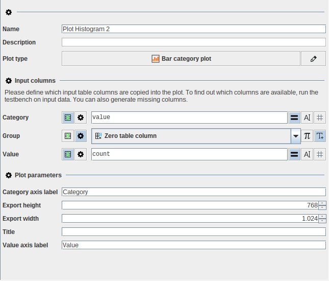
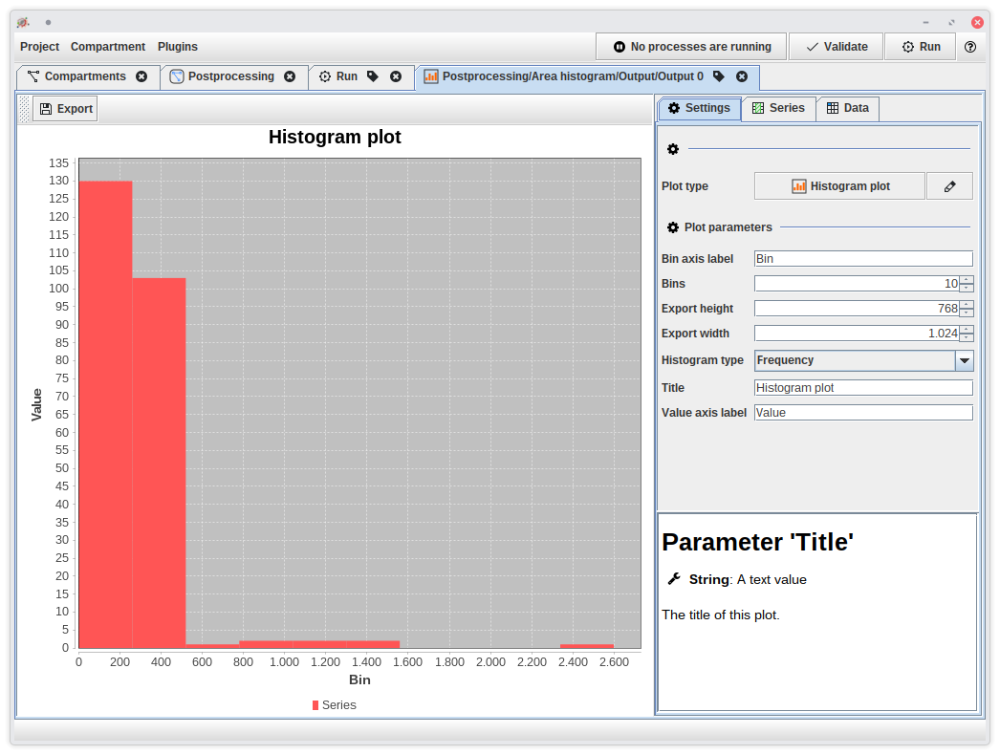

Plots and tables
The standard library contains algorithms and data types that allows to manipulate tables, and create plots. The table data type is the JIPipe wrapper for the ImageJ results table (see ImageJ integration).
Manipulating tables
Table manipulation operations are located in Process > Tables and allow you
to add, remove, or replace columns.
Creating plots
Plots can be created via the Analyze > Plot > Plot tables algorithm that
processes each incoming result table and produces an automatically generated plot.
You can decide which plot type is generated, and how to assign the columns of
the input tables to the data series as expected by the plot.
Plots are exported automatically as PNG and SVG in the size set up within the algorithm node settings.
You can later import the plot back into the JIPipe plot editor that has more options available.

Plot editor
JIPipe comes with a plot editor GUI that allows more refined control over plots than
by the standard Plot tables algorithm (for example multiple series).
You can either open a plot from results, or
create a new plot from scratch via Project > New plot.

The settings panel of the plot editor is split into three tabs:
- Settings contains all general parameters of the plot. It also allows you to change the plot type.
- Series contains all data series. A series is a collection of string or number arrays that is used as input for the plot. Depending on the plot type, there can be multiple series (e.g. the line XY plot can display multiple lines)
- Data contains a list of data columns that can be assembled to series. You can open the columns in the table editor or import columns from a CSV file. JIPipe also supports generating columns that do not carry any data, but instead generate the requested number of rows.
Table editor
While JIPipe prefers opening tables in ImageJ’s table view, it contains a table editor that allows you to do basic operations directly from within JIPipe.
You can find the operations on the right-hand side. They include some basic operations like modifying rows and columns, and specialized operations for scientific data, such as splitting values by category, quickly integrating the table, and combining columns into a single condition column.